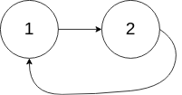
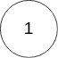

141. 环形链表
题目与约束
给你一个链表的头节点 head ，判断链表中是否有环。
如果链表中有某个节点，可以通过连续跟踪 next 指针再次到达，则链表中存在环。 为了表示给定链表中的环，评测系统内部使用整数 pos 来表示链表尾连接到链表中的位置（索引从 0 开始）。注意：pos 不作为参数进行传递。仅仅是为了标识链表的实际情况。
如果链表中存在环 ，则返回 true 。 否则，返回 false 。
示例 1：

输入：head = [3,2,0,-4], pos = 1
输出：true
解释：链表中有一个环，其尾部连接到第二个节点。
示例 2：

输入：head = [1,2], pos = 0
输出：true
解释：链表中有一个环，其尾部连接到第一个节点。
示例 3：

输入：head = [1], pos = -1
输出：false
解释：链表中没有环。
提示：
- 链表中节点的数目范围是
[0, 104] -105 <= Node.val <= 105pos为-1或者链表中的一个 有效索引 。
进阶：你能用 O(1)（即，常量）内存解决此问题吗？
核心不变量
有环时快指针一定会在环内追上慢指针。
完整推导
思路推导
-
直觉与痛点（记忆法 / HashSet）：
最直接的想法是：我一边走，一边把走过的节点用一个小本本（
HashSet）记下来。每次走到一个新节点，都去本子上查一下。如果本子上已经有了，说明我绕回来了，有环！如果走到了null，说明没环。痛点：这个小本本需要 O(N) 的空间，当链表有一千万个节点时，内存开销巨大，不符合进阶要求。
-
破局思路（龟兔赛跑 / 快慢指针）：
想象有两个人在学校的田径操场上跑步，一个是乌龟（跑得慢），一个是兔子（跑得快）。
- 情况 A（没有环，直道）：这就好比百米冲刺，兔子一直往前跑，很快就会冲过终点线（遇到
null），比赛结束。两人永远不会相遇。 - 情况 B（有环，环形跑道）：一旦两人都进入了环形跑道，神奇的事情发生了。兔子跑得快，它会在跑道里一圈一圈地转。而乌龟在后面慢慢爬。只要时间足够长，兔子一定会从背后追上乌龟，并且“套圈”也就是两人相遇！
- 情况 A（没有环，直道）：这就好比百米冲刺，兔子一直往前跑，很快就会冲过终点线（遇到
-
逻辑推演（微操设定）：
- 定义一个慢指针
slow，每次走 1 步。 - 定义一个快指针
fast，每次走 2 步。 - 让它们同时从起点
head出发。如果fast或fast.next变成了null，说明到头了，没环。如果某一个时刻slow == fast，说明兔子套圈了，有环！
Java 实现
C++ 实现
实现来源：代码随想录（programmercarl.com）
class Solution { public: bool hasCycle(ListNode *head) { ListNode* fast = head; ListNode* slow = head; while(fast != NULL && fast->next != NULL) { slow = slow->next; fast = fast->next->next; // 快慢指针相遇，说明有环 if (slow == fast) return true; } return false; } };Python 实现
实现来源：代码随想录（programmercarl.com）
class Solution: def hasCycle(self, head: ListNode) -> bool: if not head: return False slow, fast = head, head while fast and fast.next: slow = slow.next fast = fast.next.next if fast == slow: return True return FalseGo 实现
实现来源：代码随想录（programmercarl.com）
func hasCycle(head *ListNode) bool { if head==nil{ return false } //空链表一定不会有环 fast:=head slow:=head //快慢指针 for fast.Next!=nil&&fast.Next.Next!=nil{ fast=fast.Next.Next slow=slow.Next if fast==slow{ return true //快慢指针相遇则有环 } } return false } - 定义一个慢指针
/**
* Definition for singly-linked list.
* class ListNode {
* int val;
* ListNode next;
* ListNode(int x) {
* val = x;
* next = null;
* }
* }
*/
public class Solution {
public boolean hasCycle(ListNode head) {
// 如果链表为空，或者只有一个节点且没有自环，绝对没环
if (head == null || head.next == null) {
return false;
}
// 乌龟和兔子同时站在起跑线
ListNode slow = head;
ListNode fast = head;
// 只要赛道还没有到尽头（兔子还能往前跑两步）
while (fast != null && fast.next != null) {
// 乌龟走一步
slow = slow.next;
// 兔子走两步
fast = fast.next.next;
// 如果兔子和乌龟相遇了，说明在环里套圈了！
if (slow == fast) {
return true;
}
}
// 兔子冲过了终点线，说明赛道是直的，没有环
return false;
}
}
复杂度
- 时间复杂度：O(N)。
- 如果没有环，快指针走完整个链表需要 N/2 步，时间 O(N)。
- 如果有环，当慢指针进入环时，快指针已经在环里了。它们之间的距离最大为环的长度 K。因为快指针每次比慢指针多走 1 步，所以最多只需要 K 步快指针就能追上慢指针。总体还是 O(N)。
- 空间复杂度：O(1)。我们仅仅用了
slow和fast两个指针变量，完全没有开辟任何额外空间。
- 致命踩坑点：为什么
while条件必须是fast != null && fast.next != null？ - 因为你的代码里有一句fast = fast.next.next。 - 如果你不检查fast是否为空，当fast是null时，去调用fast.next会直接触发空指针异常 (NullPointerException)。 - 如果你不检查fast.next是否为空，当fast.next是null时，去调用fast.next.next同样会触发空指针异常。 - 防御指南：在链表题中，只要你想跳 k 步，就必须严密检查前面的 k-1 个节点是否为空。 - 面试面试灵魂追问：“为什么兔子一定要每次跑 2 步？跑 3 步、跑 4 步可以吗？” - 满分回答：跑 3 步或 4 步也可以判断是否有环，因为不管快慢指针速度差是多少，只要有环，相对速度差总会让他们在一个有限长的环里相遇。 - 进阶解释：但是，每次跑 2 步是最完美的。因为快慢指针的相对速度差是 2 - 1 = 1。每次循环，它们之间的距离都会严丝合缝地缩短 1 个单位。这意味着兔子绝对不可能直接“跳过”乌龟。如果是跑 3 步，相对速度差是 2，在某些特定的偶数长度环里，兔子可能会一次次地从乌龟头顶上跨过去，虽然最终还是会相遇（由于步长和环长的最大公约数问题），但会增加不必要的循环圈数和时间消耗。所以“走 1 步和走 2 步”是最安全、最高效的最佳实践。